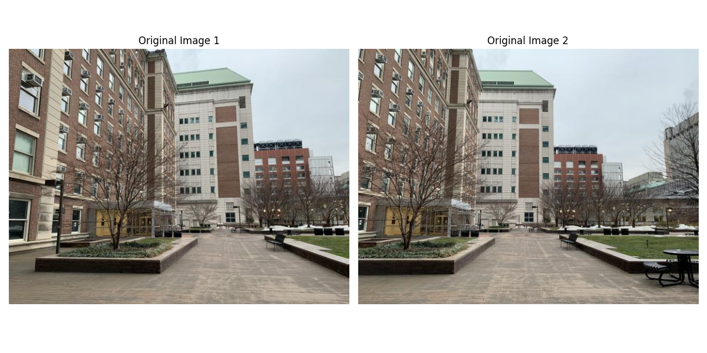
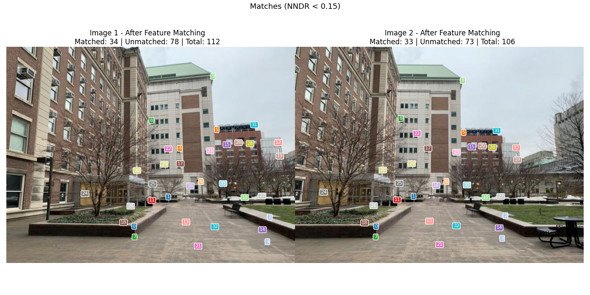
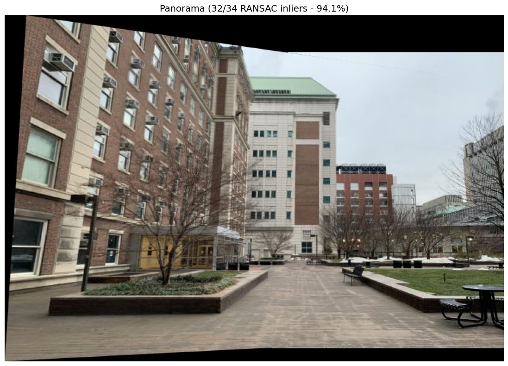

Harris Corners · MOPS Descriptors · NNDR Matching · RANSAC Panorama
Kirthana Natarajan
This project implements a system for automatically detecting and matching corresponding features across pairs of overlapping images, loosely following the "Multi-Image Matching using Multi-Scale Oriented Patches" paper by Brown et al. The pipeline detects Harris corners, suppresses redundant detections using NMS, extracts compact patch descriptors, and matches them using Lowe's ratio test. Finally, the images are stitched together to create a panorama using RANSAC homography estimation.
The feature matching pipeline consists of the following:
The Harris detector computes a corner response score at each pixel by analyzing the matrix of local image gradients, denoting the gradient in the x and y directions. Points with high corner response are likely to be corners, while points with low response are less likely to be corners.
NMS is used to identify the most dominant corners within a sliding window. For each pixel, if its corner response is not the maximum within its neighborhood, it is suppressed. This ensures that only the strongest corner in each local region is retained, reducing redundancy and improving the spatial distribution of keypoints. The result is a cleaner set of keypoints that are more likely to correspond across images without overwhelming the matching process with too many candidates.
For each corner, a 40×40 pixel patch is extracted from the grayscale image and downsampled to 8×8 with anti-aliasing, producing a 64-dimensional descriptor. Each descriptor is bias/gain normalized to zero mean and unit standard deviation, making it invariant to local brightness and contrast differences.
Feature matching is performed using Sum of Squared Differences (SSD) between all pairs of descriptors across the two images. For each descriptor in Image 1, the two nearest neighbors in Image 2 are found. A match is accepted only if the ratio of nearest to second-nearest distance is below a threshold, following Lowe's ratio test. This rejects ambiguous matches where the best candidate is not clearly better than the second-best match.
Original images and detected Harris corners for all scenes.
Corners after NMS.
Descriptors are 8×8 patches downsampled from 40×40 with anti-aliasing, then bias/gain normalized. Matching uses SSD with NNDR thresholding.
The histogram shows the distribution of NNDR ratios across all candidate matches. The red dashed line marks the threshold, matches to the left are accepted while those to the right are rejected as ambiguous.
Each row shows the descriptor patch from Image 1, its best match (1NN) from Image 2, and the second-best match (2NN) from Image 2. A low NNDR ratio means the 1NN is clearly more similar than the 2NN.
Green lines connect matched feature pairs. Red dots mark unmatched corners.
Panorama stitching is performed by first detecting and matching feature points between the two images. Using these matched points, we estimate a perspective transformation (homography) that describes how Image 1 should be aligned with Image 2. RANSAC makes this process robust by repeatedly selecting small sets of four matches to compute a candidate transformation, then checking how many of the remaining matches are consistent with it. The transformation model that agrees with the largest number of matches is chosen, while incorrect matches are discarded.
The computed homography is then applied to warp Image 1 into the coordinate system of Image 2 using a perspective mapping. Both images are placed onto a common canvas, and the overlapping region is blended. In the overlapping region, pixels from each image are weighted according to their distance from the nearest pixel in that image. This means pixels closer to the center of each image contribute more, while pixels near the edges contribute less. Therefore, each pixel looks more like the image it is closer to, effectively producing a smooth transition in the final panorama.
This project implements an automatic feature matching pipeline across five image pairs. Harris detection followed by NMS produces a clean, spatially distributed set of keypoints. MOPS-style descriptors with NNDR matching yield reliable correspondences, and RANSAC geometric verification filters out the remaining outliers, enabling stable panorama stitching with distance-weighted blending.